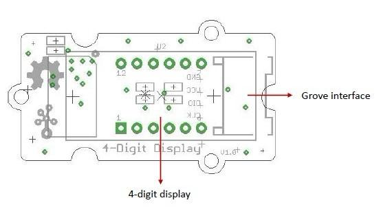
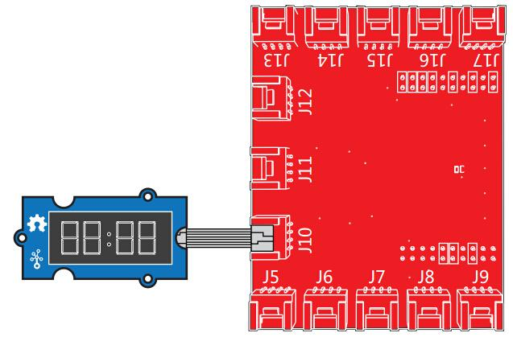
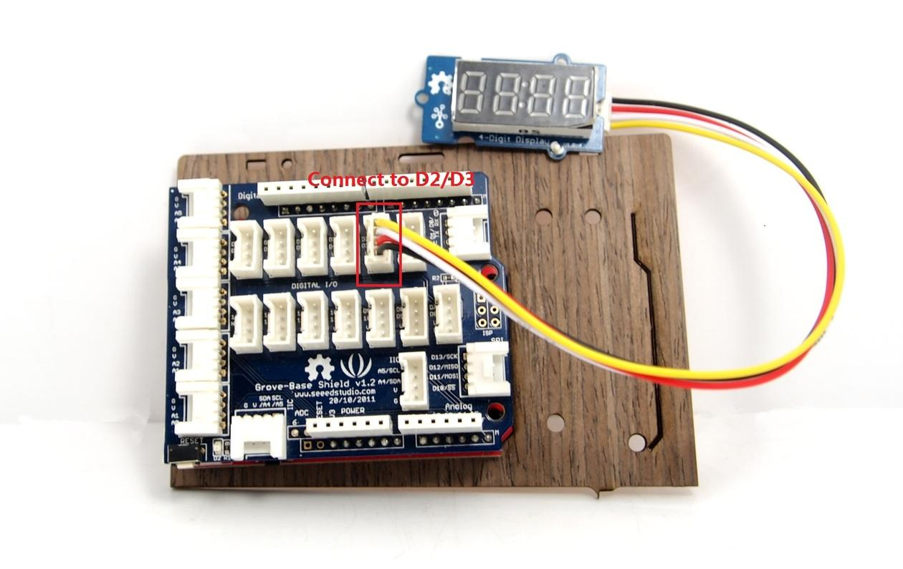
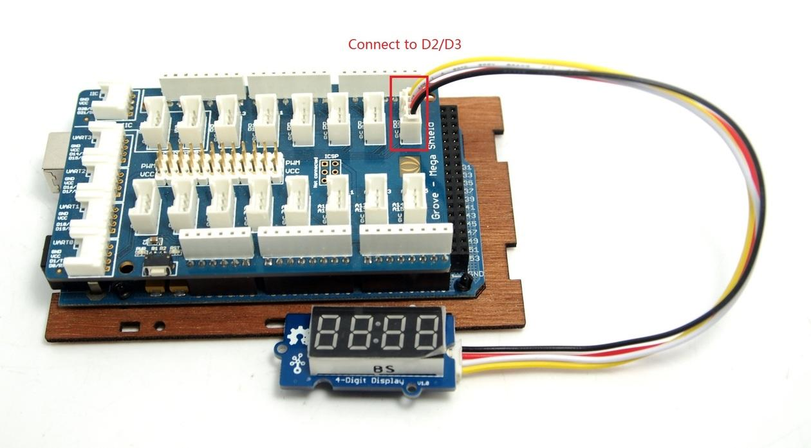
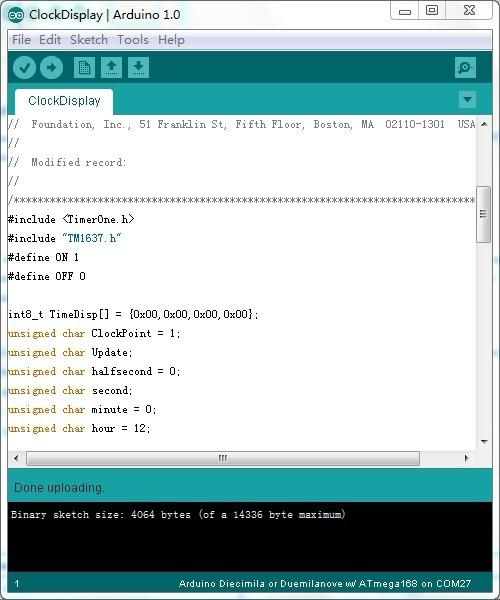
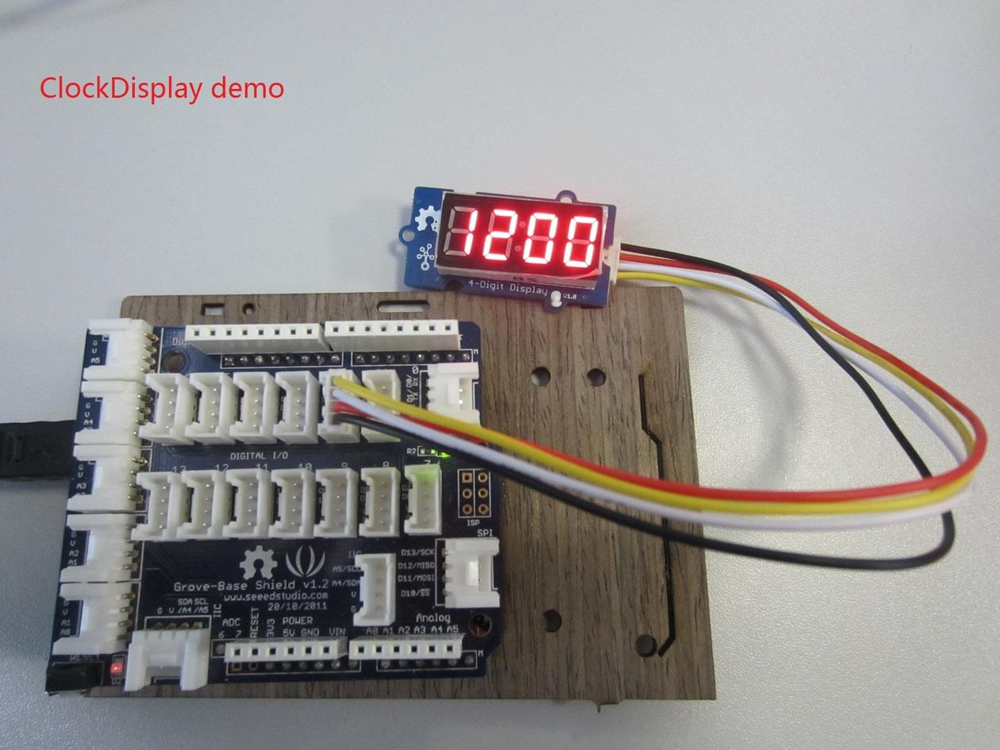

Grove - 4-Digit Display module is a 12-pin module. In this module, we utilise a TM1637 to scale down the number of controlling pins to 2. That is to say, it controls both the content and the luminance via only 2 digital pins of Arduino or Seeeduino. For projects that require alpha-numeric display, this can be a nice choice.

| Item | Min | Typical | Max | Unit |
|---|---|---|---|---|
| Voltage | 3.3 | 5.0 | 5.5 | VDC |
| Current | 0.2 | 27 | 80 | mA |
| Dimensions | 42x24x14 | mm | ||
| Net Weight | 7±1 | g | ||

Grove interface - Can be connected to digital port on Grove - Base Shield.
4 - digit display - Common anode digital tube.
Pin definition: CLK DIO VCC GND
Displaying the Numbers (4-Digital-Display)

/* * TM1637.cpp * A library for the 4 digit display */ #include "TM1637.h" #define CLK 39 //pins definitions for TM1637 and can be changed to other ports #define DIO 38 TM1637 tm1637(CLK,DIO); void setup() { tm1637.init(); tm1637.set(BRIGHT_TYPICAL);//BRIGHT_TYPICAL = 2,BRIGHT_DARKEST = 0,BRIGHTEST = 7; } void loop() { int8_t NumTab[] = {0,1,2,3,4,5,6,7,8,9,10,11,12,13,14,15};//0~9,A,b,C,d,E,F int8_t ListDisp[4]; unsigned char i = 0; unsigned char count = 0; delay(150); while(1) { i = count; count ++; if(count == sizeof(NumTab)) count = 0; for(unsigned char BitSelect = 0;BitSelect < 4;BitSelect ++) { ListDisp[BitSelect] = NumTab[i]; i ++; if(i == sizeof(NumTab)) i = 0; } tm1637.display(0,ListDisp[0]); tm1637.display(1,ListDisp[1]); tm1637.display(2,ListDisp[2]); tm1637.display(3,ListDisp[3]); delay(300); } }
The module uses an LED drive chip - TM1637 to control the contents and change the luminance. Here we drive it to display time.
1. Connect the Grove socket marked "IN" on the LED Strip Driver and digital port 2 of the Grove - Base Shield with a Grove cable. You can change to the digital port as you like. But don't forget to change the port number in the definition of the demo code at the same time.
2. Plug onto Arduino/Seeeduino or plug Grove - Mega Shield onto Arduino Mega.
Seeeduino and Grove - 4-digit display:

Arduino Mega and Grove - 4-digit display:

3. Connect Arduino/Seeeduino to PC via a USB cable.
4. Download the 4-Digit Display library and TimerOne library. Unzip and put them in the libraries file of Arduino IDE by the path: ..\arduino-1.0\libraries.
5. Restart the Arduino IDE, open one demo code you like, for example ClockDisplay directly by the path:File -> Example ->DigitalTube->ClockDisplay.

6. Upload the demo code and the clock will be ticking in a few seconds. Please click here if you do not know how to upload.
You can see this:

1.You should have got a raspberry pi and a grovepi or grovepi+.
2.You should have completed configuring the development enviroment, otherwise follow here.
3.Connection
4.Navigate to the demos' directory:
cd yourpath/GrovePi/Software/Python/
nano grove_4_digit_display.py # "Ctrl+x" to exit #
import time
import grovepi
# Connect the Grove 4 Digit Display to digital port D5
# CLK,DIO,VCC,GND
display = 5
grovepi.pinMode(display,"OUTPUT")
# If you have an analog sensor connect it to A0 so you can monitor it below
sensor = 0
grovepi.pinMode(sensor,"INPUT")
time.sleep(.5)
# 4 Digit Display methods
# grovepi.fourDigit_init(pin)
# grovepi.fourDigit_number(pin,value,leading_zero)
# grovepi.fourDigit_brightness(pin,brightness)
# grovepi.fourDigit_digit(pin,segment,value)
# grovepi.fourDigit_segment(pin,segment,leds)
# grovepi.fourDigit_score(pin,left,right)
# grovepi.fourDigit_monitor(pin,analog,duration)
# grovepi.fourDigit_on(pin)
# grovepi.fourDigit_off(pin)
while True:
try:
print "Test 1) Initialise"
grovepi.fourDigit_init(display)
time.sleep(.5)
print "Test 2) Set brightness"
for i in range(0,8):
grovepi.fourDigit_brightness(display,i)
time.sleep(.2)
time.sleep(.3)
# set to lowest brightness level
grovepi.fourDigit_brightness(display,0)
time.sleep(.5)
print "Test 3) Set number without leading zeros"
leading_zero = 0
grovepi.fourDigit_number(display,1,leading_zero)
time.sleep(.5)
grovepi.fourDigit_number(display,12,leading_zero)
time.sleep(.5)
grovepi.fourDigit_number(display,123,leading_zero)
time.sleep(.5)
grovepi.fourDigit_number(display,1234,leading_zero)
time.sleep(.5)
print "Test 4) Set number with leading zeros"
leading_zero = 1
grovepi.fourDigit_number(display,5,leading_zero)
time.sleep(.5)
grovepi.fourDigit_number(display,56,leading_zero)
time.sleep(.5)
grovepi.fourDigit_number(display,567,leading_zero)
time.sleep(.5)
grovepi.fourDigit_number(display,5678,leading_zero)
time.sleep(.5)
print "Test 5) Set individual digit"
grovepi.fourDigit_digit(display,0,2)
grovepi.fourDigit_digit(display,1,6)
grovepi.fourDigit_digit(display,2,9)
grovepi.fourDigit_digit(display,3,15) # 15 = F
time.sleep(.5)
print "Test 6) Set individual segment"
grovepi.fourDigit_segment(display,0,118) # 118 = H
grovepi.fourDigit_segment(display,1,121) # 121 = E
grovepi.fourDigit_segment(display,2,118) # 118 = H
grovepi.fourDigit_segment(display,3,121) # 121 = E
time.sleep(.5)
grovepi.fourDigit_segment(display,0,57) # 57 = C
grovepi.fourDigit_segment(display,1,63) # 63 = O
grovepi.fourDigit_segment(display,2,63) # 63 = O
grovepi.fourDigit_segment(display,3,56) # 56 = L
time.sleep(.5)
print "Test 7) Set score"
grovepi.fourDigit_score(display,0,0)
time.sleep(.2)
grovepi.fourDigit_score(display,1,0)
time.sleep(.2)
grovepi.fourDigit_score(display,1,1)
time.sleep(.2)
grovepi.fourDigit_score(display,1,2)
time.sleep(.2)
grovepi.fourDigit_score(display,1,3)
time.sleep(.2)
grovepi.fourDigit_score(display,1,4)
time.sleep(.2)
grovepi.fourDigit_score(display,1,5)
time.sleep(.5)
print "Test 8) Set time"
grovepi.fourDigit_score(display,12,59)
time.sleep(.5)
print "Test 9) Monitor analog pin"
seconds = 10
grovepi.fourDigit_monitor(display,sensor,seconds)
time.sleep(.5)
print "Test 10) Switch all on"
grovepi.fourDigit_on(display)
time.sleep(.5)
print "Test 11) Switch all off"
grovepi.fourDigit_off(display)
time.sleep(.5)
except KeyboardInterrupt:
grovepi.fourDigit_off(display)
break
except IOError:
print "Error"
5.Run the demo.
sudo python grove_4_digit_display.py
6.This demo may not work if your grovepi dosen't have the newest firmware, update the firmware.
cd yourpath/GrovePi/Firmware sudo ./firmware_update.sh
If you want to make some awesome projects by 4-Digit Display, here's one project for reference.

With this demo, we can see the air quality data on 4-Digit Display.

Copyright (c) 2008-2016 Seeed Development Limited (www.seeedstudio.com / www.seeed.cc)